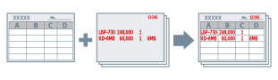

Документ можно распечатать с наложением предварительно созданного файла формы.
Выполните следующие действия.

1.
Создайте форму в приложении → в строке меню выберите [Печать].
Форма создается в виде одностраничного файла.
2.
Выберите используемый принтер → нажмите [Свойства принтера] или [Свойства].
3.
Нажмите [Параметры страницы] во вкладке [Макет страницы].
4.
Откройте вкладку [Наложение] → выберите [Создать файл формы] в [Способ обработки].
5.
Укажите имя файла в поле [Имя файла] → нажмите [ОК].
6.
Нажмите [ОК] на экране драйвера принтера.
7.
Нажмите [Печать] или [OK].
Данные для печати сохраняются в принтере как файл формы.
1.
В приложении создайте данные, которые нужно распечатать с наложением формы → в строке меню выберите [Печать].
Данные создавайте с теми же параметрами указанных настроек, которые использовались для файла формы:
Вкладка [Основные настройки] или [Макет страницы] → [Размер вывода]/[Ориентация]
Вкладка [Качество] → диалоговое окно [Дополнительные настройки] → [Разрешение]
2.
Выберите используемый принтер → нажмите [Свойства принтера] или [Свойства].
3.
Нажмите [Параметры страницы] во вкладке [Макет страницы].
4.
Откройте вкладку [Наложение] → выберите [Использовать печать с наложением] в [Способ обработки] → выберите файл формы из [Список файлов].
Если информацию из принтера получить невозможно, [Список файлов] не отображается. В таком случае введите имя файла в поле [Имя файла].
При черно-белой печати невозможно использовать форму, созданную в цветном режиме.
5.
При выполнении двухсторонней печати выберите диапазон применения в [Применить к].
6.
Нажмите [ОК] → нажмите [ОК] на экране драйвера принтера.
7.
Нажмите [Печать] или [OK].
Файл формы и данные для печати печатаются с наложением друг на друга.
Необходимые условия
При получении информации о принтере с компьютера клиента в среде общего принтера: Установка на сервере Canon Driver Information Assist Service (можно установить с помощью программы установки драйвера принтера).
Справки
Если после создания файла формы и выполнения печати с наложением нужно вернуться в режим обычной печати, не закрывая при этом файл, выберите вкладку [Макет страницы] → диалоговое окно [Параметры страницы] → вкладку [Наложение] → [Не использовать печать с наложением].